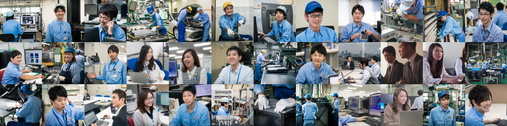
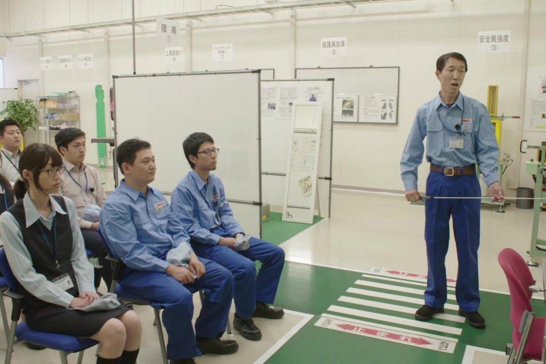
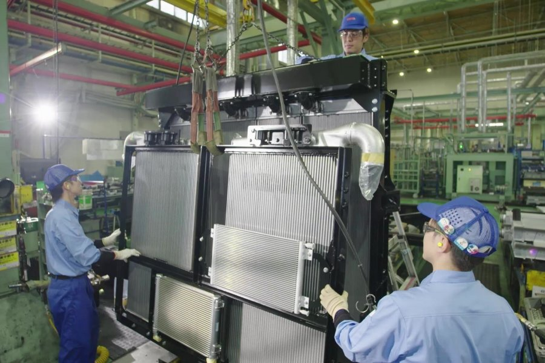

Message
拡大し続ける成長市場
1936年の創業以来、
ティラドは熱交換器のパイオニアとして歩んできました。
エネルギー利用に熱管理は欠かせず、
EVシフトが進むこれからの時代も私たちの技術は必要不可欠です。
需要がなくなることのない安定した成長市場は、
技術者が腰を据えてスキルを磨く最高の環境。
世界No.1を目指す高度な現場で、
市場価値の高い専門性を身につけながら、
私たちと共に成長していきませんか？

We are T.RAD
We are T.RAD
We are T.RAD
We are T.RAD
HIRING CATEGORY
募集区分
Job Categories
職種紹介
Interviews
社員インタビュー

